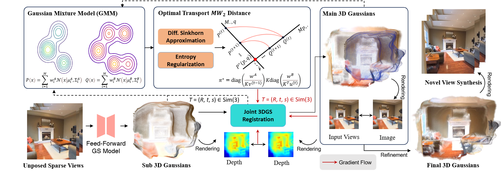
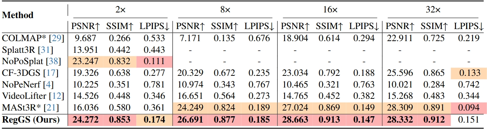

Novel View Rendering
Our method not only registers the 3D Gaussians but also enhances novel view synthesis through global refinement.


3D Gaussian Splatting (3DGS) has demonstrated its potential in reconstructing scenes from unposed images. However, optimization-based 3DGS methods struggle with sparse views due to limited prior knowledge. Meanwhile, feed-forward Gaussian approaches are constrained by input formats, making it challenging to incorporate more input views. To address these challenges, we propose RegGS, a 3D Gaussian registration-based framework for reconstructing unposed sparse views. RegGS aligns local 3D Gaussians generated by a feed-forward network into a globally consistent 3D Gaussian representation. Technically, we implement an entropy-regularized Sinkhorn algorithm to efficiently solve the optimal transport Mixture 2-Wasserstein $(\text{MW}_2)$ distance, which serves as an alignment metric for Gaussian mixture models (GMMs) in $\mathrm{Sim}(3)$ space. Furthermore, we design a joint 3DGS registration module that integrates the $\text{MW}_2$ distance, photometric consistency, and depth geometry. This enables a coarse-to-fine registration process while accurately estimating camera poses and aligning the scene. Experiments on the \textit{RE10K} and \textit{ACID} datasets demonstrate that RegGS effectively registers local Gaussians with high fidelity, achieving precise pose estimation and high-quality novel-view synthesis.
Overview of our pipeline for 3D Gaussian Splatting from multiple unposed sparse views. A pre-trained feed-forward GS model extracts sub 3D Gaussians from each input, while two initial images yield the main 3D Gaussians. We measure the structural closeness of Gaussian sets using the entropy-regularized $\text{MW}_2$ distance and align them in $\mathrm{Sim}(3)$ space with our joint 3DGS registration module. Our method outperforms others in reconstruction quality and novel view synthesis.
First, we use a pre-trained feed-forward Gaussian model to construct a main Gaussians from two initial images. Then, for each new input, a sub Gaussians is generated and aligned with the main Gaussians. Specifically, by solving the optimal transport $MW2$ distance with an entropy-regularized Sinkhorn approximation, our differentiable 3DGS joint registration module estimates the $\mathrm{Sim}(3)$ transformation and merges the sub Gaussians into the main Gaussians. Finally, we perform refinement of the global Gaussians, yielding a high-fidelity 3D reconstruction.
To evaluate the effectiveness of our method, we conducted experiments on the RE10K and ACID datasets. The RE10K dataset includes indoor and outdoor scene videos, while ACID consists mainly of aerial shots of natural landscapes captured by drones. Both provide camera poses and intrinsic parameters. Following the setup in NoPoSplat, we use the test sets of each dataset for evaluation.
For unposed sparse views reconstruction task, the number of views we reconstructed are 2, 8, 16, and 32. To simulate sparse input, both training and testing views are equidistantly sampled from the videos. For 2-view scenarios, we sample every 40 frames for videos with significant motion and every 60 frames for scenes with less motion. For scenarios with 8, 16, and 32 views, training views are equidistantly sampled throughout the entire video. The test set includes all frames not used for training. Our method not only registers the 3D Gaussians but also enhances novel view synthesis through global refinement.
Our method and the baseline are under 16-view input. Our method achieves higher pose estimation accuracy than other unposed methods and is applicable to various scenes and camera motions.